The guide
Everything Hyprtile does, from install to the last config key, in order. Words in code are what you see in the app.
Install
Get Hyprtile on Google Play. Pay once: no subscription, no ads, no analytics, no account. Hyprtile runs on Android 10 or newer, on phones and tablets, in portrait and landscape.
Updates. A new version from Google Play downloads in the background while you use your phone. When it is ready, a banner says "an update is ready", with restart and later. Later hides it until you next come home. Home starts faster too, from a startup profile that ships with the app.
First run and setup
The first start has three screens, one choice each. The title tells you where you are, like 1 of 3 · pick your look.
pick your look: every look as a card, in four groups. Tap one and your home changes behind the screen. Thennext ›.pick your pages: the free ready workspaces as cards. Tick up to three; at a glance and music are ticked to begin with. They take the place of the starter pages. Untick them all and you getkeep the starter pages ›.make it your home: tapmake it my homeand pick Hyprtile when Android asks which app opens on home. Thentake the tour ›, orlater, take the tour ›.
Each screen has ‹ back. The first run asks for no permission. Location, calendar and notification access are asked the first time a window needs them. People who update from an older Hyprtile never see the first run and keep their pages.
The setup guide
While the first steps are not done, the main menu starts with finish setup, with how many are left. The setup guide has 8 steps; the first three count for finish setup. Tap a step to open its page. Done steps show a tick.
default home: make Hyprtile your home screen.lock screen: pick Hyprtile lock screen, then "Lock screen" or "Home and lock screen".notification access: for the notifications window and music controls.hide system cards: set lock screen notifications to "Don't show any notifications".dynamic clock off: so Android's big clock does not cover yours.location for weather: or type a city instead.calendar: for the calendar and meeting windows.battery saver: advice on saving power.
The guide is in the menu again under tour and gestures, setup guide, or type setup in the terminal.
Set as home screen
The easiest way is the third screen of the first run, make it my home, or later the setup step default home. You can also do it in Android settings. On most phones it is under Apps, then Default apps, then Home app. To go back, pick your old launcher there.
The tour and the cheat sheet
The tour starts by itself at the end of the first run. It has 8 steps on your real desktop, and edit mode comes first, since the layout is locked outside it:
hold an empty spot: edit mode. Keep your finger still until it buzzes.tap + add: pick a window. It lands in free space at its own size. Hold one and drag it out to drop it where you like.drag a window: drop it in the middle of another to swap, on its edge to split, or on free space to move it.drag a gap or an edge: resize. The windows beside it follow.tap done: done saves the layout, and outside edit mode nothing moves by accident.swipe sideways: move between pages.double tap a window: it fills the screen. Double tap again to tile it back.swipe up from the bottom: find an app. Type to filter, tap to launch.
A ghost finger acts each one out on your own windows, and a step is done when you do it yourself. The card has back, skip and end. TalkBack hears each step.
The end card, tour done, offers the gesture cheat sheet, and undo the tour if the tour changed your layout.
The gestures cheat sheet lists every gesture with what it does and how. Find both in the menu under tour and gestures, or type tour or gestures in the terminal.
Gestures
- swipe sideways
- workspaces. Each page keeps its own windows.
- swipe up
- find an app. From the lower half; type to filter.
- pull down
- from the top of the screen: what you picked, the full screen hyprtile panel by default. See pull down.
- double tap empty space
- lock the phone, once lock gesture is on
- tap the clock
- your clock app
- tap a window
- use it. Every window is live.
- double tap a window
- full screen. Double tap again to tile it back.
- hold a window, drag
- in edit mode: move. The middle of a window swaps, its edge splits it, empty space moves it.
- hold a window, let go
- the window menu: size, move, replace, move to a page, remove
- hold an empty spot
- edit mode. The strip on top has add, looks, pages, menu, lock and done.
- tap + or + add
- add a window. It lands at its own size, half the page at most.
- drag a gap or an edge
- in edit mode: resize. Windows on both sides follow.
- double tap a gap
- in edit mode: flip split, side by side or stacked
- tap x
- in edit mode: remove the window. Undo shows for 6 seconds.
- hold an app
- in rofi or the dock: pin, hide, app info, uninstall
The layout is locked outside edit mode, so nothing moves by accident while you use your windows. The lock button on the edit strip turns that off.
The desktop
Your home is a tiling desktop, like Hyprland on a laptop. Each window is live, with a gradient border, a soft glow and frosted glass that lets the wallpaper shine through.
The bar. A waybar style bar with workspace pills, the clock, battery, network, cpu and memory. On a fresh install it is hidden, like in the store pictures, so windows get the space. Show it in the menu under home and apps, top bar. With the bar shown, the ≡ button on it opens the menu. The phone's own status bar has its own row there too.
Top bar items. Menu, home and apps, top bar items: pick what the bar shows, and put each item left, in the centre or right, in the order you like, like waybar. Pick the clock format: 12 or 24 hour, date, seconds, or your own pattern in hyprtile.conf, bar, clock_format. Auto shows the date when it fits.
The dock lines up with the windows and takes all its apps, in two rows when needed. It shows every app you pin, up to 10, even with more pins than how many says, and its icons stay round with six apps or more. Work apps get their own icons and pins, and an app you uninstall leaves the dock. With three button navigation, the buttons sit on a solid band.
The starter desktop has four workspaces, if you keep the starter pages in the first run:
- clock, weather, battery and moon, placed on a grid with room to add more
- btop, cliamp, fetch and toggles
- calendar, notes, pomodoro and moon
- an empty page
Pick pages in the first run instead, and you get those pages. At a glance and music are ticked to begin with.
Workspaces
Swipe sideways to slide between workspaces, or pages. You can have up to 9. Open the menu, pages, or pages on the edit strip:
- move this page
- ‹ moves it left, a tap anywhere else moves it right
- rename this page
- see workspace names
- close this page
- remove this page
- go to 1, 2, 3...
- jump to a page, with how many windows it has
- apps, notifications
- rofi and the notification shade, by tap
- lock phone
- lock the phone now, once the lock service is on
- new page
- a new empty page. New pages start free, like a home screen grid.
- ready workspaces
- a whole page in one tap. See ready workspaces.
- free page
- on keeps each window where you put it; off tiles the page
- black page
- turn this page pure black, or back (pro)
- new black page
- a page of pure black with no frost (pro)
On an empty black page the bar hides too, so it is all black.
Workspace names
Open pages and tap rename this page. Type a name, like mail or music. It shows on the bar and in menus, like go to 2 · music. Leave it empty for the number.
Ready workspaces
Menu, ready workspaces: whole pages for how people use their phones. Each card shows a picture of the page as it will be laid out on your screen. Tap one, then pick new page (your other pages stay as they are) or replace this page. The windows grow to fill the whole page, and the page takes the name.
- at a glance
- clock, weather and your calendar
- daily driver
- clock, weather, calendar and notifications
- minimal
- a clock and your apps
- music
- clock, cliamp and cava
- focus
- clock, pomodoro and notes
- night stand
- clock, alarm and battery
- traveller
- world clocks, weather and the forecast
- well being
- water, breathe and habits
- rice
- fetch, btop and cava, for the screenshot
- fit
- health, devices and water (pro)
- dev
- git, ping and the editor (pro)
- explorer
- gps and sensors (pro)
- news desk
- clock, news and on this day (pro)
- vault
- 2fa codes, passwords and clipboard (pro)
- space
- iss, launches and aurora (pro)
- matchday
- matchday and a clock (pro)
- world watch
- radar, quakes and rates (pro)
That is 17 pages: 9 free and 8 with pro. A page with a pro window is pro.
Edit mode
Hold an empty spot, or tap edit home screen in the window menu or the main menu. The strip on top reads:
- + add
- add a window
- looks
- whole looks, a picture of each. See looks.
- pages
- go to, new, ready workspaces, move, close, apps and notifications by tap
- menu
- every setting, with search
- lock on, lock off
- on keeps sizes and places as they are outside edit mode. On by default.
- done
- leave and save
When the buttons do not fit across, the strip takes two rows. Each window gets an x to remove it, a grip and edge handles. After a remove, undo shows for 6 seconds. Free cells show dotted + spots that open the picker aimed at them. Back, done or a tap on bare wallpaper leaves edit mode and saves.
On a tiled page, a make room: free page pill turns it into a free page.
Add a window
- Tap
+ add, or a dotted+spot. - The sheet shows windows in groups: time and weather, phone, media, system, tools and pro. Each has a live preview, one line about it and the size it opens at, like
4x2. Tapsearch windowsto type. The list glides on after a flick. - Tap a window. Aimed at a spot, it goes straight in. Otherwise it waits at the best spot with
place for me,spots ›andcancel, and you can drag it anywhere. - Or hold a row and drag: the window comes out under your finger, with a lit outline of where it lands.
A new window opens at its own size and never takes more than half the page.
Replace with
Hold a window, let go, and tap replace with. The same sheet opens, with every other window's live preview. The window you replace is pictured at the top with a now tag, and each row says swap. Tap one and it takes the same place and size. Pro kinds open the pro menu without pro.
Android widgets
With pro, pick android widget in the sheet. The chooser is a gallery: each app is a heading, and each of its widgets is a card with the picture the app ships for it (or the app's icon when it ships none), its name and the size it opens at. From replace with, a widget takes the window's place and size, and one widget can replace another. Some widgets ask you to set them up first.
Move and size on a free page
A free page is a grid of cells, like an Android home screen: about 4x8 on a phone and 8x12 on a tablet. Empty cells stay empty.
- Move: hold a window and drag it to empty space.
- Swap: drop it on the middle of another window.
- Split: drop it near another window's edge to share that space.
- Size: in edit mode drag an edge handle, or use the window menu,
size ›: wider, narrower, taller, shorter. - By taps only: the window menu has
movewith a spots list andsize ›, so nothing needs a drag.
While you drag, the drop is named: "swap", "split 2x2", or the size.
Landscape. Turn the phone and a free page fits the screen. Edit it in landscape and it keeps its own landscape layout, while portrait stays as it was. rotation in home and apps steps through follow phone, portrait, landscape and always turns.
Tiled pages
A tiled page fills the whole screen with its windows, like Hyprland. Pick the layout in the menu, home and apps, how windows share the page: each new one halves (dwindle) or one big, rest stacked (master).
- Drag a gap between two windows in edit mode to resize. Every window on both sides follows, and the split snaps to the middle with a tick.
- Double tap a gap in edit mode to flip that split: side by side or stacked.
- Double tap a window for full screen, and again to tile it back.
- reset splits in the window menu puts sizes and flips back.
Each workspace keeps its own sizes.
Every window
Hyprtile has 70 window kinds: 51 free and 19 with pro, plus Android widgets with pro. They are listed here in the groups of + add. Kinds marked pro come with pro; without it they show a pro card, fetch nothing, and the picker still shows what each looks like.
Time and weather
- clock
- the time in big gradient digits, with the date. Tap it to open your clock app.
- world
- a clock card for each city you pick
- weather
- now, the next hours and the coming days, with sunrise and sunset
- forecast
- the week as range bars, a chart of highs and lows
- sun
- sunrise, sunset and golden hour today
- moon
- the moon phase tonight and the next full moon
- calendar
- the month and your next events
- meeting
- how long until your next meeting
- countdown
- days left to a date you pick, or a timer: "tea 4m", "1h30", "at 18:30"
- word clock
- the time in words, on a grid of letters
- binary
- the time as a binary clock, bcd or plain bits
- progress
- how far through the day, week, month and year
- air
- air quality and pollen for your place, with the best hours to go out
- holidays
- days to the next public holiday or school break, long weekends and the bridge day to take off. See school holidays.
- on this day
- what happened on this date in history, from Wikipedia
- since
- days since a start, with milestones
- ring
- your day as a ring round the clock, with your calendar on it
- life dots
- your life, year, month or day in dots
- calendars
- today in other calendars
- planets
- the planets up tonight and where to look, worked out on the phone
- glyph
- a 25 by 25 dot matrix: the clock, battery, a timer or a level
- sea
- waves, swell and sea temperature at a spot you pick
Phone
- notifications
- your notifications as cards, mako style. Tap to open, swipe left to dismiss, hold for more.
- inbox
- notifications and events as tabs
- brief
- date, next event, weather, inbox, tasks and phone in one
- apps
- every app in a grid, pinned ones first
- app shelf
- app icons you pick, one per cell, as a row or a block. See the app shelf.
- toggles
- torch, ring mode, do not disturb and more
- battery
- level, charge, heat and a graph of the day
- network
- download and upload speed right now
- storage
- what fills the disk, as a treemap
Media
- cliamp
- the music playing, with the real spectrum and radio
- cava
- a music visualizer in seven styles
System
- btop
- cores, memory and network, btop style
- gauges
- cpu, memory, disk and heat as rings
- fetch
- your phone's specs, fastfetch style
- dash
- a greeting, the date and a quote of the day
- terminal
- a small shell that knows the launcher
- pipes
- neon pipes that crawl across the tile
- matrix
- falling streams of glyphs, cmatrix style
- fortune
- a quote of the day, said by a cow
- fire
- aafire, the ASCII doom fire, hotter as the cpu works
- donut
- donut.c, the spinning ASCII torus
- life
- Conway's game of life. Tap to seed it.
Tools
- notes
- a todo list kept on the phone
- notepad
- a free text pad like a small vim
- pomodoro
- a focus timer with rounds and breaks
- alarm
- your next alarm, sleep cycles and quick alarms, set in the clock app
- calc
- a calculator with brackets
- stopwatch
- a stopwatch with laps
- snake
- snake, steered with swipes
- punch
- clock in and out, work hours by week
- water
- a glass that fills as you drink
- breathe
- box breathing with a dot tracing the shape
- tally
- a big tap counter for push ups, coffees, laps
- habits
- habits with goals and streaks, and today at a glance
- dice
- a coin, one to five dice or a d20, tap to roll
- pet
- a pixel pet to feed and play with
- qr
- your wifi, a link or a contact as a code to scan
- tldr
- a command a day for git, Linux, Hyprland, vim and adb
- mood
- one tap a day for how the day was, and your year in colour
- cycle
- a private period tracker: ring, next period, flow and symptoms. It stays on this phone and never goes in a backup.
- fasting
- your fasting window as a ring
- word
- a word of the day with its meaning and an example
- define
- look up a word: meanings, examples and words that mean the same, from Wiktionary and Datamuse
- convert
- units offline, and money with the European Central Bank's daily rates
- script
- what your own Termux script prints, on a timer (early access, see Termux scripts)
- browser
- web pages as text in your theme, like lynx and w3m. Insiders only, see the browser.
A running countdown, pomodoro or stopwatch, and your work time while you are clocked in, also tick as pills on the lock screen.
Pro windows
These come with Hyprtile pro.
- android widgets
- widgets from your other apps as tiled windows, picked from a gallery of each widget's own picture. A widget stack holds several in one window: swipe to flip through. See android widgets.
- 2fa codes (otp)
- 2fa codes, encrypted on this phone only and never in a backup. Scan a QR code with the camera or from a picture, bring all your codes over from Google Authenticator in one scan, and keep a backup file sealed with your passphrase. While a code shows, screenshots and screen recordings come out black.
- editor
- plain text and json files: format, check, tree
- passwords
- strong passwords and passphrases, never saved. The clipboard is cleared after.
- clipboard
- what you copy, sealed on this phone, with pins. Off until you turn it on.
- friend
- fli, the terminal pet, as a window: 18 pets with big line art, five traits (kindness, patience, playfulness, wisdom and humor) and 600 bits of everyday life advice. Roll an egg or type a seed; your terminal user name gives the same pet fli gave you.
- gps
- where you are and every satellite overhead, cgps style
- sensors
- compass, level, motion, air pressure and light, live
- news
- any RSS or Atom feed, riced like newsboat, that turns into a ticker tape when short
- rain radar
- rain around you, with its last hour on a loop
- aurora
- the northern lights tonight, from the Kp index
- quakes
- the latest earthquakes on a world map, the nearest to you and how deep
- iss
- where the space station is now, its track, and when you can see it fly over
- launches
- a countdown to the next rocket launch
- rates
- currency rates from the central bank, with a chart of the month or the year
- ping
- a gping style latency graph to a few hosts, and whether your sites are up
- git
- your GitHub or GitLab contribution graph, the one in every ricer's readme
- matchday
- up to 3 teams from football, NBA, NFL, NHL and more: a countdown to kickoff, then the live score, goals, cards and stats, with form, the table and next fixtures. Each team has a lit badge in its colours, the score sits on a faint pitch, full time says win, draw or loss, and a goal bursts on screen in the scorer's colour. It fetches only while the window is on screen.
- devices
- your buds, headphones, watch and car with a battery ring, and the last day as a graph
- health
- steps toward your goal, heart rate and sleep, from Health Connect or the phone's own step counter. It reads only what it shows, and nothing in the background.
- screen time
- screen time today against your limit, your top apps, the hours and the week
- data
- mobile and wifi data this month
- ticker
- stocks and coins with a chart
- lyrics
- the words of the song that plays, in time
- apod
- NASA's picture of the day in your theme's colours, with its story. Tap for the day before.
- speed
- a speed test: download, upload and ping, from Cloudflare
- uptime
- your own sites, up or down this month
- hass
- your Home Assistant, one tap away: lights, switches and readings. Your token stays on this phone, sealed. A plain http address is only asked on the wifi you set it up on, never on mobile data or another wifi; behind a VPN only a Tailscale style 100.64 address is asked.
- people
- your favourite people. Tap one to call or text.
- wifi
- the wifi networks around you, their signal and channels
With pro, icon pack (menu, home and apps) uses any icon pack app you have for the dock, shelves and apps, and a hold on an app lets you change icon to any icon from any pack. icon size helps packs that draw small.
Windows show more when their tile is bigger. A tile too small for its content draws the window zoomed out, never squashed.
The app shelf
The app shelf is in the phone group of + add. It holds one app per cell, at any size: 1x1 is one app, a 4x1 is a row of four, a 1x4 is a column, and 4x2 or bigger is a grid. It opens as a 4x1 row. Each shelf keeps its own apps, so you can have as many as you like.
- Add an app: tap a
+on the shelf and pick fromadd to the shelf. Type to find one. - Open an app: tap its icon.
- Change the shelf: hold an app and let go. The window menu starts with
open,change app ›,move left,move rightandremove from shelf, thenapps on the shelf ›andlabels. - Size:
size ›in the same menu, or the edge handles in edit mode. A smaller shelf keeps the apps it cannot show for when it grows. - Labels: auto, on or off. Auto shows names when there is room. The same row is in the menu,
home and apps,app shelf labels.
The icons follow the dock's icons style: color, theme or mono. TalkBack reads "app shelf, 4 apps, 4 by 1" and each app by name, and apps on the shelf lets you reorder by taps.
School holidays
The holidays window shows school breaks next to the public holidays. The dates come from OpenHolidays, for about 36 countries, per country and per zone: a German state, a French zone, a Swiss canton, a Belgian community or a Dutch region. They are fetched once a month and kept on the phone. While school is out, the big number gives way to "school's out", with a ring that fills as the break goes and the day school starts again.
Hold the window and let go. After country and region come the school rows:
- school holidays
with holidays(the default),only schooloroff. Step it with ‹ and ›.- school zone
- where your school is.
pick for meguesses from your region; a long list opens with the keyboard, so type to find yours. A country with one set of dates sayswhole country, and a country the feed lacks saysnot in the feed. - add a break of your own
- for a private school, or a country the feed lacks. Type day month day month and a name, like
23 12 6 1 christmas, or two dates, like2027-02-15 2027-02-19. One date is a single day. A break is at most 120 days long; if Hyprtile can not read it, it says why and keeps your text. - your breaks
- the breaks you typed, by date. Tap one to remove it.
- refresh now
- asks the feeds again
In what it shows, school breaks in the list, school band on the month and school bars on the strip turn each part on or off. Each break gets its own art: a summer sun, autumn leaves, a tree, a ski slope or a spring flower. The same breaks show in a holidays window on the lock screen and in the holidays stat wallpaper, from one shared fetch.
Notifications and pull down
The notifications window shows your notifications as cards, mako style: tap to open, swipe left to dismiss, hold for more. Buttons like mark as read and archive sit right on the card. When new ones arrive while you read further down, the card you are on stays still; at the top, new cards slide in. The news window and the link menu keep their place the same way.
- notifications ›
- menu,
home and apps:filteris show all, hide system, or hide system and silent. System noise like charging and USB notices stays out. Any app can be hidden with a hold. - notification badges
- count, dot or none on app icons
Pull down
Menu, home and apps, pull down picks what a pull down from the top part of home opens: the hyprtile panel, android notifications, quick settings, app search, nothing, or open an app you pick. Over a list that scrolls, the list comes first.
The hyprtile panel is a full screen pull down of windows you pick. The same menu sets it up:
- sheet clock
- the clock big, small or off
- alarm, event and weather
- your next alarm, next event and the weather in one line
- android shade buttons
- a quick settings button
- sheet windows
- which windows it shows, top down, and their order. Tap one to move it up or down or take it out. It can hold toggles, cliamp, notifications, calendar, weather, forecast, cava, alarm, battery, network, gauges, btop, brief, notes, pomodoro and world.
Notifications stretch to fill, and on a short screen the last windows wait. On a tablet the notifications go on the left and the rest on the right.
Rofi: find an app
Swipe up from the lower half of the screen. Start typing, and fuzzy search finds the app. Apps are listed most opened first; switch to a to z in the menu, home and apps, app order.
A swipe that starts on a window that scrolls, like apps, scrolls that window instead. Every list glides on after a flick, and a touch stops it.
Turn on open the only match in home and apps, and the app opens by itself once your typing leaves just one.
With pro, contacts in search: type a name in rofi to call or text. Off until you turn it on.
The terminal
The terminal window is a kitty style shell called hysh. It greets you with a fastfetch style summary. Try:
- help
- every command
- open camera
- open an app
- theme nord
- change the theme
- wall tokyo
- change the wallpaper
- layout master
- change the tiling layout
- conf
- edit hyprtile.conf
- tour, gestures, setup
- the tour, the cheat sheet, the setup guide
- fetch, battery, uptime, date
- info about the phone
- clear
- clear the screen
- t ls
- run a command in your Termux (see below)
Under customize, for ricers, kitty you set its text size, cursor (block, bar or underline), blink, how many lines it keeps and whether it opens with fetch or clear.
Termux scripts
Early access: Insiders have it now, and from 1 February 2027 it is part of pro. Hyprtile does not bring Linux with it. It asks your own Termux to run a command and shows what comes back. Use the Termux from F-Droid or GitHub: the Google Play one cannot take commands from other apps.
- Open the menu,
customize,for ricers,termux. get termuxif you have none.turn on commandscopies one line and opens Termux. Paste it there and press enter.allow hyprtile, thentest. It says ok when all is ready.
Then type t and a command in kitty, like t ls. Or add a script window: pick a script from ~/.shortcuts (the folder Termux:Widget uses) or type a command. It shows what the script prints, colours and all, and runs it again on a timer while it is on screen. Hold it for its menu: run every, name, text size, start at the top or the end, time out, and which parts it shows. Drag to scroll.
Seven ready widgets (bar, btop, weather, ping, colours, calendar and crypto) install with one line from termux.zanoski.com/widgets. The whole setup is at termux.zanoski.com. Android hides cpu load and uptime from apps, so scripts that read them show nothing; memory, disk, network and anything from the web work.
Only apps you allow can send commands to Termux, and only after you turn commands on. Hyprtile runs only what you type in kitty or set in a script window, and nothing leaves your phone.
The browser
For Insiders, the optional monthly subscription. It stays with Insider and does not come to pro. Add browser from the tools group. Web pages come in as plain text in your theme, like lynx and w3m: links in the accent colour, a tap follows one, and Back goes back. Tap the address at the top to type an address or words to search. A plain http address shows in red.
The start page has a search box and your bookmarks. Search goes to DuckDuckGo, wiby or Wikipedia. Hold the window for its menu:
- bookmark this, bookmarks
- save the page, open or remove one, or put the first ones back
- reader view
- only the main text, no menus or footers
- search with
- duckduckgo, wiby or wikipedia
- open full
- the page as it really is, for logins, JavaScript and video, with
javascript in fullon or off - open in your browser, share link
- hand the page to another app
- text size
- small, normal, large or huge
- clear history
- pages read and the back list; bookmarks stay
The full view runs apart from home, so a heavy page never takes your home screen down. A page can open another app only when you tap. Logins and cookies stay on this phone, never in a backup. Without Insider, the window shows what it is and a tap opens the Insider menu.
Music, radio and cava
cliamp
The music window, styled after cliamp by Bjarne Øverli (MIT): track and artist, time, Playing or Paused, a block spectrum, a seek bar, three keys and the playlist when the player shares one. Keys follow what the player allows. Tap a playlist row to jump to it.
More than one player? Swipe the track line or the [app] tag sideways to switch players. Tap the tag to open that app, and hold it for the list of players. Hyprtile stays on the app you last started, even between songs.
Hold the window and let go for real visualizer, spectrum, music source, queue and radio ›. album art puts the cover behind the player, and album art blur sets it sharp, light or soft. cava has the same two rows.
Radio
cliamp radio is built in: Lofi, Synthwave, EDM, Chiptunes, Amiga, NCS House, Dubstep, Drum and Bass, Trap, Phonk, Chill and more. Pick a station, see the song title as it plays, and step stations with next and previous. Radio by cliamp, radio.cliamp.stream. It connects only while a station plays.
cava
A visualizer in seven styles: bars, blocks, mirror, wave, radial, term and dots. cava shows only the sound; turn on the track and play keys in what it shows. Colors run vertical, across or mono. The window menu has cava look ›, music source and go to player. Swipe cava sideways to switch players, or hold its title for the list.
The real visualizer
Turn on real visualizer in the menu, home and apps. Android asks for the microphone, because that permission reads the sound the phone plays. Only the loudness per band is read; nothing is kept or sent. Some players keep their sound private, and then the window says "no audio from this player".
Weather and places
Weather comes from Open Meteo. With location allowed it uses where you are, rounded to about 1 km before it is sent. Or set a city in the menu, clock and weather, weather places, or from the weather window menu. Then no location permission is needed.
forecast model, in clock and weather, picks the weather model: auto, MET Norway, ECMWF, DWD ICON, GFS or Météo France. Auto takes the best one for where you are. The conf key is weather_model under general.
calendar app, in clock and weather, picks which app opens your events and days, so Android stops asking each time.
Several places work too, split by commas: Zagreb, London, here, where here is your location. Tap the weather window to step to the next place. A tall weather window shows a pill per place and + city; hold a pill to show, move or remove it. Tap a day in the days row to see that day.
Looks, themes and wallpapers
The look has three rows near the top of the main menu: looks, wallpaper and fine tune. looks is on the edit strip too.
- looks
- whole looks in one tap. See looks.
- wallpaper
- your own picture, live weather, and every scene with a note under each. See wallpapers.
- fine tune
- the parts of a look one by one, then motion and feel:
- theme
- a list of every theme, each with its own colours beside it.
pro themesat the end has 30 more with pro. - day and night
- a day theme and a night theme, by the sun or by the clock, and the blue light filter. See day and night.
- glass
- opacity, glass tint, inactive, blur, dim inactive, bar opacity, menu opacity, rounding and gaps, as sliders that show live while you drag
- borders and glow
- border size, border glow, which window the glow follows, glow strength and glow size
- font
- JetBrains Mono, Fira Code, Meslo, Hack, Caskaydia Mono, or the phone's own
- load font file
- any monospace .ttf or .otf from your phone, free
- clock weight
- how bold the big clock is
- big numbers
- a smaller temperature, clock and timers
- motion and battery
- see motion and battery
- feel
- haptics, scroll ticks, try every effect, pomodoro on time
Looks
Menu, looks holds 57 whole looks, as cards in five groups: top rices, calm, neon, editor themes and light. One tap changes the whole look: wallpaper, colours, glass, borders, fonts and clock. Your windows stay, and your own look at the end brings back the conf and wallpaper you had before trying these. Each card shows the look painted for real. A look built on a pro theme shows a pro tag, and without pro a tap opens the pro menu. 21 are pro, among them classy black, liquid glass, emerald, rose, black and gold, and vice city.
The painted looks lead the list:
- classy black
- pure black, hairline white borders, a thin clock (pro)
- liquid glass
- clear white glass over a flowing colour field (pro)
- cream and forest
- cream paper, forest green ink and silk, a serif clock
- camel and navy
- the out of the box look: navy silk, camel borders, a serif clock
- deep forest
- forest green night, cream silk, brass borders
- emerald
- jade glass on green silk, lime to teal borders (pro)
- rose
- rose gold on pink silk, a light serif clock (pro)
- eink paper
- grey ink on still paper, nothing glows or moves. Every window prints in ink only, and the weather holds still.
- latte paper
- catppuccin latte on a light honeycomb
- black and gold
- gold borders round a black hole (pro)
- tokyo rain
- wet neon alleys, live weather on
- area 51 cat
- new, by Bro8302, shared on Reddit: a saucer lifts cats out of the pines, sunset theme, clear glass at 30 percent, no borders and no glow
- vice city
- miami pink and teal, palms at sunset, heavy type (pro)
- rgb glow
- a rainbow border on true black, every window lit
Then the looks from the ricing scene: neon hyper, night city, aurora glass, outrun drive, deep space, vapor dream, blood moon, toxic circuit, glacier, oled void, sakura, mocha cozy, dracula, github dark, one dark, monokai, gruvbox retro, nord lights, event horizon, warp drive, the deep, honeycomb, digital rain, field map, hanami, polygon dusk and vice beach.
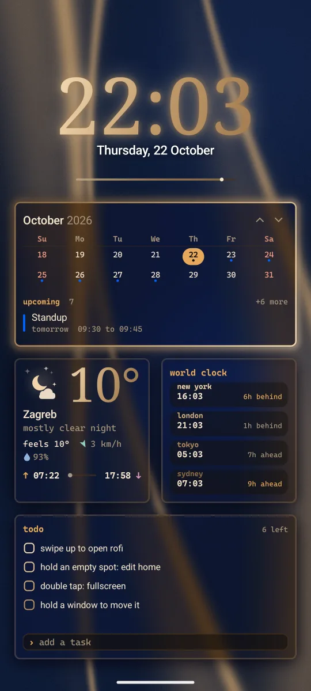
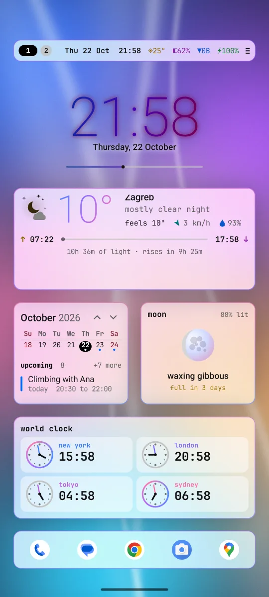
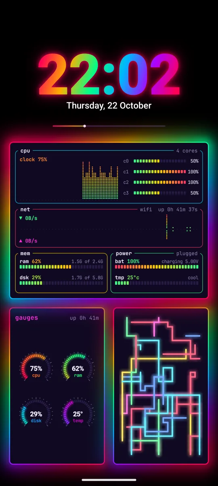
The themes
34 themes, each in its own original colours. The house looks: hyper, synthwave, cyberpunk, vaporwave, outrun, borealis, sunset, toxic, ice, blood moon, deep ocean, sakura, navy, forest, cream and eink, grey ink on paper. And the themes people use most: Tokyo Night, Catppuccin Mocha and Latte, Gruvbox, Nord, Rose Pine, Everforest, Kanagawa, Dracula, GitHub Dark, One Dark, Monokai, Solarized Dark, Night Owl, Ayu Mirage, Palenight, Matte Black, Osaka Jade and Ristretto.
With pro, 30 more under pro themes: pure black, pure white, gold, ember, jade, orchid, rose gold, blueprint, dune, nebula, miami, glacier, c64, c128, night red, and the top rice variants like gruvbox material, rose pine moon and dawn, tokyo night storm and moon, kanagawa dragon, catppuccin frappe, oxocarbon, synthwave 84, monokai pro, flexoki light, lumon, cyberdream, hackerman and ethereal. Night red is reds on black only, like an astronomy app, so your eyes keep their dark sight.
Day and night
The theme can change by itself: one theme by day, another by night. Open the menu, fine tune, day and night:
- switch
- off,
by the sunor22 to 7. By the sun turns at sunrise and sunset. 22 to 7 is by the clock: night from 22 to 7. - day theme
- the theme by day.
same as themekeeps your main theme. - night theme
- the theme by night, the same way
- blue light filter
- it warms the home, the lock screen and the screen saver at night. The first tap turns it on at 40%; each tap after adds 10, up to 80%, and then it goes off. With the switch off, night is sunset to sunrise.
By the sun uses sunrise and sunset where the weather is, worked out on the phone. Before the weather has a place, day is 7 to 19. Turn the switch on with no side picked, and the day side starts on Catppuccin Latte, so you see the change.
The theme row in fine tune changes the side on show, when that side has its own theme. The lock screen and the screen saver follow too. In hyprtile.conf the keys are theme_auto (off, sun or hours), theme_day, theme_night and night_filter.
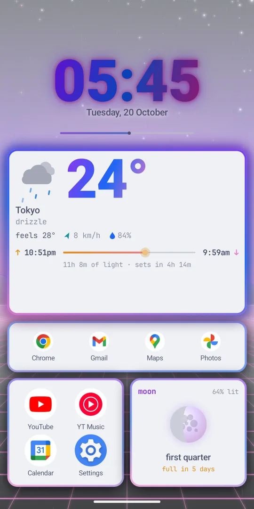
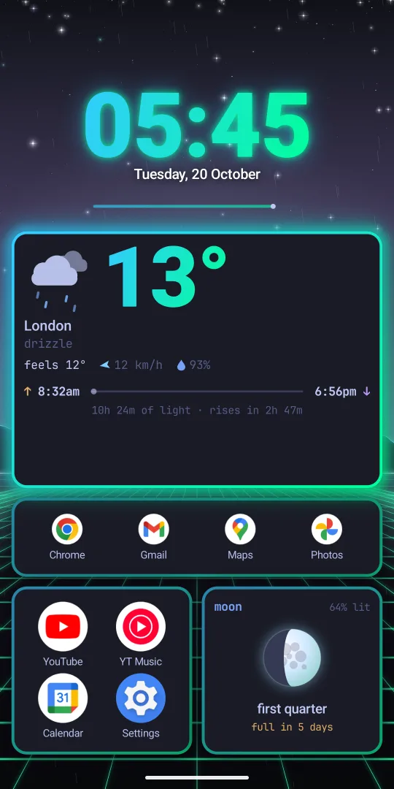
Wallpapers
Menu, wallpaper is a list. It starts with your own picture (pick a photo or image from this phone) and live weather. Then every scene: each row has a note under it, and a tap paints that scene behind the menu, so you can try them in turn. A dot marks the one on show. Every scene takes the colours of your theme.
- aurora
- northern lights over a mountain lake
- nebula
- deep space, a ringed planet and an arc of light
- synthwave
- the banded sun and a neon grid running at you
- circuit
- light running along circuit traces
- peaks
- moonlit snowy peaks, snow falling
- city
- a neon skyline in the rain
- pastel
- soft pastel clouds and a glass orb
- blackhole
- new: a black hole, its disk bent over the top
- warp
- new: stars streaming past at warp speed
- abyss
- new: deep water, light from above, jellyfish rising
- hex
- new: a honeycomb lit from above, pulses of light
- matrix
- new: glyph rain in your theme colours
- topo
- new: a shaded relief map with contour lines
- sakura
- new: a cherry branch in bloom, petals drifting
- lowpoly
- new: faceted mountains at dusk over a lake
- palms
- new: a vaporwave sunset at sea behind palms
- tokyo
- new: a narrow tokyo street at night in the rain
- silk
- soft silk ribbons in your theme colours
- liquid, graphite, navy, rose, emerald, cream, forest, ufo
- painted pictures: poured colour, black silk with a graphite sheen, navy silk with a camel satin ribbon, wine dark silk in blush light, emerald silk with a lime glint, ivory silk with a forest green band, and forest green silk with a brass ribbon. The presets use them.
- black
- true black, the pixels stay off
- paper
- plain still paper in your theme colour, the eink paper look uses it
- phone
- your phone's own wallpaper, from any wallpaper app, behind the windows
- image
- your own picture, listed once you pick one with
your own picture
That is 30 choices: 18 moving scenes, 8 painted pictures, black, paper, your phone's wallpaper and your own image. Or type wall tokyo in the terminal.
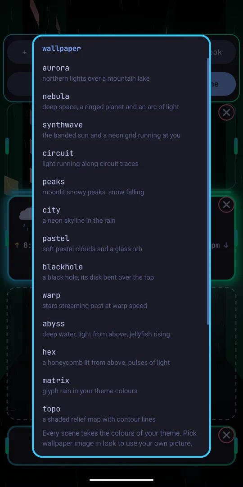
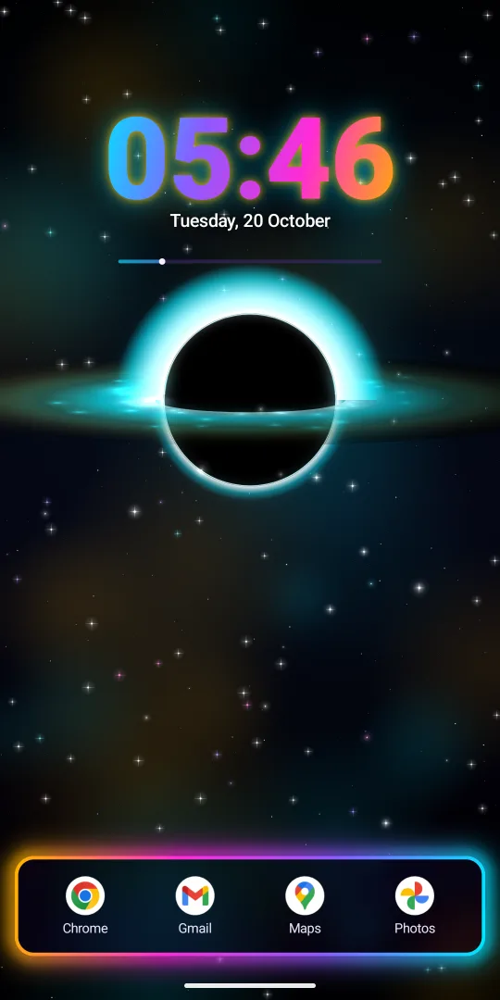
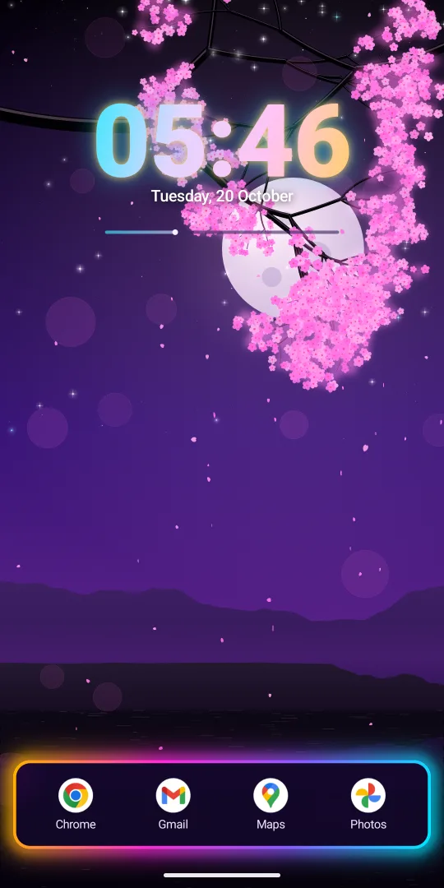
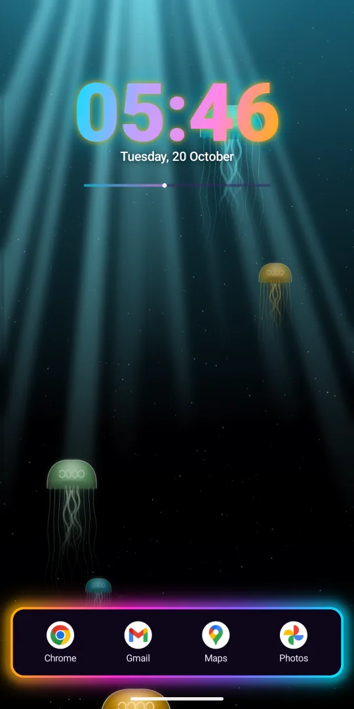
Live weather
Turn on live weather in wallpaper, and the real weather falls over your wallpaper: rain, drizzle, heavy rain, snow, fog and thunder. It follows the place the weather window shows. A clear or cloudy sky adds nothing. It shows on home, on the lock screen and on the screen saver. In hyprtile.conf it is wallpaper_weather = on.
It costs little: about half a point of CPU.
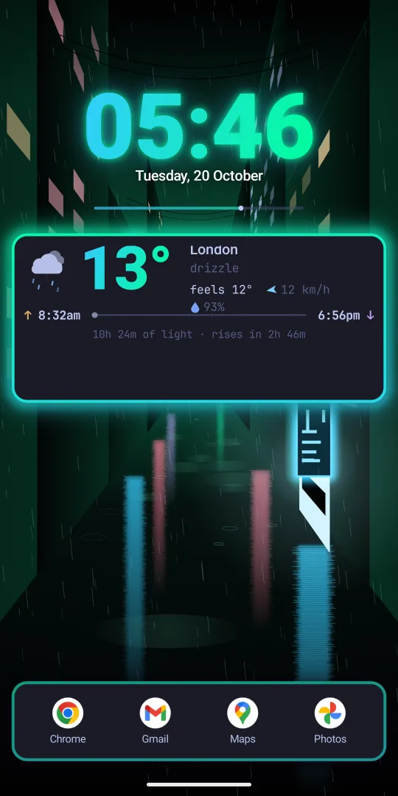
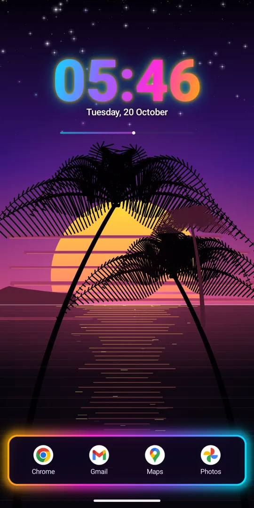
hyprtile.conf
Hyprtile keeps its look in hyprtile.conf, written in Hyprland's syntax. Open it from the menu, config file, or type conf in the terminal. Save it and the desktop reloads live.
theme = navy wallpaper = navy wallpaper_weather = off # on: the real weather over the wallpaper theme_auto = off # off, sun or hours (22 to 7) theme_day = catppuccin-latte theme_night = general { gaps_in = 5 gaps_out = 12 border_size = 3 col.active_border = theme 45deg layout = dwindle # dwindle or master lock_gesture = off # off or double_tap } decoration { rounding = 16 blur { enabled = true size = 8 } } workspace = 1, grid 4x8, clock 4x2+0+0, weather 4x3+0+2 workspace = 2, btop, cliamp, fetch, toggles
theme,wallpaper,wallpaper_weather,theme_auto,theme_day,theme_night: the look on top of the filegeneral: gaps, border size and gradient border coloursdecoration: rounding, opacity, blur, glow and shadowfonts: the terminal font, the clock face and its weightanimations: bezier curves and the animations that use thembar: show or hide, top or bottom, modules and opacityworkspace: what each page opens.grid 4x8makes a free page; each box is width x height + column + row.windows: world clock cities, pomodoro minutes, cliamp and cava options,shelf_labelslockscreen: the clock, glow, seconds, style and what the lock screen shows
The file itself explains every key in comments.
Lock screen
Android does not let an app replace the lock screen, but it shows your wallpaper behind it. Hyprtile comes with a live wallpaper in the hyprlock style: the same moving scene, a big clock, and widgets for battery, weather, your next event and more.
Open the menu, customize, lock screen. The main rows are there, the rest under fine tune:
- set as lock screen
- opens the live wallpaper picker. Pick "Lock screen" or "Home and lock screen".
- widgets on the lock
- your own Hyprtile windows on the lock screen. See below.
- stat wallpaper
- a live picture of a number behind the clock. See below.
- lock scene
same as home, or any scene for the lock screen alone. Home keeps its own.- motion
- full (a bloom on wake and the full drift), soft (a slow drift) or off (still)
- clock, date
- show or hide each
- clock size, clock glow
- step them with ‹ and ›
- pills
- turn each on or off: weather, battery, next event, next alarm, unread count, network and uptime. With pro: steps today, last night's sleep and buds battery.
- now playing
- the track playing, with five bars that dance to the real sound when the real visualizer is on
- notifications
- names, full or off. Names is the private default.
- hide system cards
- opens Android's lock screen page
- style
- pills or card
- seconds
- ring, trace or off
A running countdown, pomodoro or stopwatch, and your work time while you are clocked in to punch, show as pills with the time ticking each second. No notification is needed, on every Android version Hyprtile runs on.
Your windows on the lock screen
Android keeps app widgets off the lock screen, but Hyprtile's own windows can draw there, in frosted cards. widgets on the lock lists the ones that may: anyone holding the phone sees them, so only windows with nothing private are offered. No notes, passwords, 2fa, clipboard, calendar titles, terminal, browser, notifications or Android widgets. Windows on the lock screen take no touch.
The kinds: holidays, weather, forecast, sun, moon, battery, countdown, since, progress, life dots, word clock, gauges, storage, uptime, pomodoro, stopwatch, water, habits, clock, planets, world, donut, matrix, fire, aurora, and with pro, health and devices. Health and devices show once you allowed them in their window on home.
Tap a kind to add it or take it off; the number is its place. Two show side by side on a phone, three on a tablet or in landscape. On a short screen the windows step aside before they cover the clock. none takes them all off.
Stat wallpaper
stat wallpaper steps with ‹ and › through a live picture of your phone's own numbers, drawn between the scene and the clock, in the lock's theme:
- battery
- the screen fills with a liquid up to the charge, with bubbles while it charges
- day
- the sun rides an arc from sunrise to sunset; at night the moon in its real phase
- year
- the year as a field of dots, the days gone lit and today pulsing
- weather
- the sky now: rain, snow, fog, storm flashes, sun rays or stars
- steps
- a ring round the clock that fills to your goal. With pro and health allowed.
- holidays
- a band counting down to the next holiday or school break
- moon
- a large moon in tonight's phase, with its name
- off
- no stat
In hyprtile.conf these are windows, stat and wallpaper in the lockscreen section.
Screen saver
lock screen and saver, screen saver: try it now, set as screen saver, wallpaper, dim the screen, power readings, graphs, rings, top bar and seconds track. It shows while the phone charges.
The lock screen follows day and night, and shows live weather when it is on. More keys live in the lockscreen section of hyprtile.conf.
Lock gesture
Lock the phone with a gesture instead of the power button. It is off by default. Open the menu, home and apps, lock gesture ›:
- off
- no gesture
- double tap empty space
- the wallpaper or the empty part of the bar
- hyprtile lock service
- Android accessibility; it only locks the screen
- lock now
- try it
Double tap empty wallpaper or the empty part of the bar and the phone locks, like the power button. Fingerprint and face unlock keep working. Windows keep their double tap for full screen, and gaps keep theirs for flip split.
Android only lets an app lock the screen through an accessibility service, so Hyprtile first says what the Hyprtile lock service does: it locks the screen, does not read your screen, sees no other apps, and collects and shares no data. Tap agree and open settings, then turn on Hyprtile lock in Accessibility (it may be under downloaded apps). lock phone is in the pages menu too. In hyprtile.conf it is lock_gesture = double_tap under general.
The menu
There is one main menu, the door to every setting. Hold an empty spot and tap menu on the strip, or tap ≡ on the bar when it shows. With the bar hidden, the window menu has a menu row too. The rows, top down:
- finish setup
- only while the first setup steps are not done, with how many are left. See the setup guide.
- search settings
- find any row as you type
look
- looks
- 57 whole looks. See looks.
- wallpaper
- your own picture, live weather and every scene. See wallpapers.
- fine tune
- theme, day and night, glass, borders and glow, font, load font file, clock weight, big numbers, motion and battery, feel
workspaces
- ready workspaces
- 17 whole pages. See ready workspaces.
- add a window
- the picker, with all 99 kinds
- edit home screen
- edit mode
- pages
- see workspaces
system
- home and apps
- top bar, status bar, app dock, rotation, app order, open the only match, contacts in search (pro), pull down, notifications, lock gesture, notification badges, quick actions, real visualizer, hidden apps, app shelf labels, icon pack, icon size, hide passwords, how windows share the page, top bar items, lock layout, link devices, text editor, editor look
- clock and weather
- clock, units, weather places, calendar app
- lock screen and saver
- lock screen and screen saver
- tour and gestures
- tour, gestures, setup guide, reset to defaults
- keyglow keyboard
- Keyglow, our keyboard, one tap away on Google Play. It can take your wallpaper picture, glass and rounding along with the theme. Fileglow, the file manager, can take your theme too.
- config file
- hyprtile.conf
privacy
- privacy and permissions
- the privacy page, with every permission and what it is for. See privacy.
pro
- hyprtile pro
- see Hyprtile pro
- restore purchase
- pro bought on another phone
help
- user guide
- this guide, in the browser
- report a bug or ask for a feature
- the report page
- privacy policy
- the full privacy policy
rate us sits in the main menu just above help: rate Hyprtile on Google Play, or tell us what is wrong. After a few good starts, never on the first, Google Play may show its own short rating sheet, at most once in 60 days.
New rows elsewhere: clock font (block, round, led, ascii, shade and round led) in the look's fine tune, date in clock and weather for how the date reads, hidden apps in customize, home to bring a hidden app back, and hinge gap in home's fine tune, which keeps every window off the fold on a two screen phone. Work profile apps say "(work)".
support the developer
A short note says you can support Hyprtile if it helps you, then insider: an optional 0.99 a month subscription through Google Play that pays for bug fixes and the live feeds (weather, radar, the ISS, quakes and more). Insiders get new features before everyone else (each one opens to every user on a set date), their bug reports and ideas read first, and an Insider mark in About with their date. Nothing free or in Pro ever moves behind it. The browser window is the one thing made for Insiders alone: it stays with Insider and does not come to pro. Once you subscribe, the row says thank you and opens Google Play, where you cancel any time. Last comes hyprtile v2.32 with about ›, which opens hyprtile.zanoski.com, and one line under it: Hyprtile has no server of its own, so we never see what it shows or fetches.
Motion and battery
Menu, fine tune, motion and battery:
- frame rate
- 60 fps (the default), max (your screen's top rate) or 30 fps. It sets everything that moves on its own. Touches, drags and scrolling stay fast.
- animations
- off stills the scene, the border spin, ripples and transitions
- touch ripples
- a neon ring where your finger lands
- frame stats
- shows the frame rate on screen
Windows with nothing new to show do not redraw, and an open menu, rofi or the picker rests between changes. The bar, the dock and the weather redraw only when something changed.
Battery saver brings motion to about 30 frames a second and holds the weather sky still, unless you picked a frame rate yourself. A page where nothing moves, like a black or image wallpaper with still windows, drops to one frame a second.
Live weather costs about half a point of CPU while rain, snow, fog or thunder falls, and nothing under a clear sky.
To save the most: frame rate 30, animations off, a black page, or the oled void or eink paper look. With animations off the weather sky stays still too. Solid one colour borders never redraw on their own.
Link devices
Menu, home and apps, link devices syncs your theme with Phosphor or another Hyprtile on the same wifi, and with an Omarchy computer through the Phone Sync plugin. Turn link on, pick the device, and check that both screens show the same six digit code, then same code, pair.
On Android 17 it asks for local network access, after a short note, when you turn link on. It stays on your own network and only sends the theme and this phone's name to devices you paired. It only answers devices on the same wifi or ethernet, never over mobile data. It is off by default. Full steps on the Phone Sync page.
Hyprtile pro
The Play price buys the whole app. Pro is an optional extra you never need: one purchase adds everything in it and every add on that comes later, with no subscription. Open the menu, hyprtile pro, then add pro extras. Pro unlocks right after the purchase or a restore.
- Pro windows: android widgets and widget stacks, 2fa codes, the editor, passwords, clipboard history, friend, gps, sensors, news, rain radar, aurora, quakes, iss, launches, rates, ping, git, matchday, devices, health, screen time, data, ticker, lyrics, apod, speed, uptime, hass, people and wifi.
- The 8 pro ready workspaces, like fit, dev, vault and space.
- Lock screen pills for steps today, last night's sleep and your buds' battery.
- Icon packs, and
change iconon any app. - Contacts in search.
- 30 more themes, night red among them, the 21 looks built on them, and the black page.
restore purchase, right under it in the menu, brings pro back on a new phone.
Accessibility
- Touch targets are at least 48dp, even on a window drawn zoomed out.
- TalkBack reads menu rows, picker rows, the edit strip, handles and every window. A double tap on a window opens its menu.
- Nothing in placement needs a drag: the size and spots menus do it all by taps.
- The glass under text keeps a 7:1 contrast. Themes keep their original colours.
- The clock is lifted to 3:1 against the wallpaper under it, the rule for large text.
- The system font size is honoured: windows zoom with it.
- Android's "remove animations" and the
animationssetting still the motion. - Lock gesture lets you lock the phone with a double tap, and
lock phonein thepagesmenu does it with one tap. - Menus follow large font sizes, and the support row fits on one line with large text.
Privacy and permissions
No ads, no tracking, no analytics, no crash reports, no error reports, no account and no AI. Your data stays on your phone. Menu, privacy and permissions opens the privacy page. It says each thing once:
- promises: the list above, as pills
- permissions: each one Android asks you for, what it is for, and whether it is allowed now. Tap a row to open Android's page for Hyprtile, where you can take it back.
- given without asking: the ones Android gives on install, each with what it is for
- denied by design: SMS, call log, phone and your files. Hyprtile never asks for them; a wallpaper or font you pick comes through Android's picker.
- only when you turn it on: what goes out, and only once you turn it on
- in full: the privacy policy, with every host and what it receives
Hyprtile holds 23 permissions: 13 that Android asks you for, and 10 that it gives without asking. Every asked one is optional:
- location
- weather for where you are, rounded to about 1 km before it is sent. A typed weather place works without it. Precise only for the gps window (pro), and that never leaves the phone.
- calendar
- the calendar windows read your events on the phone, nothing is written
- notification access
- the notifications window, badges and the music controls. Read on the phone, never sent.
- microphone
- only for real audio bars in cava and cliamp: it reads how loud the music is. Nothing is recorded, kept or sent.
- contacts
- only for contacts in search (pro). Never saved or sent.
- camera
- only to scan a 2fa QR code (pro). No picture is kept.
- nearby devices
- the devices window (pro): names and battery of paired gear. It never scans.
- health and activity
- the health window (pro) and steps on the lock screen, read only
- notifications
- the radio's controls in the shade
- exact alarms
- the pomodoro rings on time from the background
- local network
- link and the router ping
- accessibility service
- only for the lock gesture: it locks the screen and reads nothing
- run commands in termux
- only for Termux scripts: kitty's
tand script windows ask your Termux to run what you set. Output stays on the phone.
Given without asking: internet, alarms, do not disturb, uninstall apps, pull down the shade, vibrate, network state, audio settings, radio playback and Google Play billing.
Location, calendar and notification access are asked only the first time a window needs them. Microphone, contacts, clipboard history and notification access each show a short note with agree and not now before Android asks. Nothing is sent to us: Hyprtile has no server of its own. Only when you turn them on: the weather and the network windows you place (air quality, rain radar, news, holidays, on this day, aurora, quakes, space station, launches, rates, ping and git), the radio when you press play, the browser window and the sites you open in it, link to your own paired devices on the same wifi, and Android backup to your own Google account. Never in a backup, and not moved to a new phone: 2fa codes, the Home Assistant token, the clipboard history, health, steps, cycle, mood and habits, the link keys and pairings, the pro purchase flag (restore purchase brings pro back) and the browser's logins and cookies. Read the full privacy policy, also under help, privacy policy.
Store look and reset
The store look is the camel and navy look, in the calm group of looks. One tap brings it back.
reset to defaults (in tour and gestures) asks reset hyprtile.conf? and offers yes reset it, bring back the saved copy and keep my config. A reset always saves a copy first.